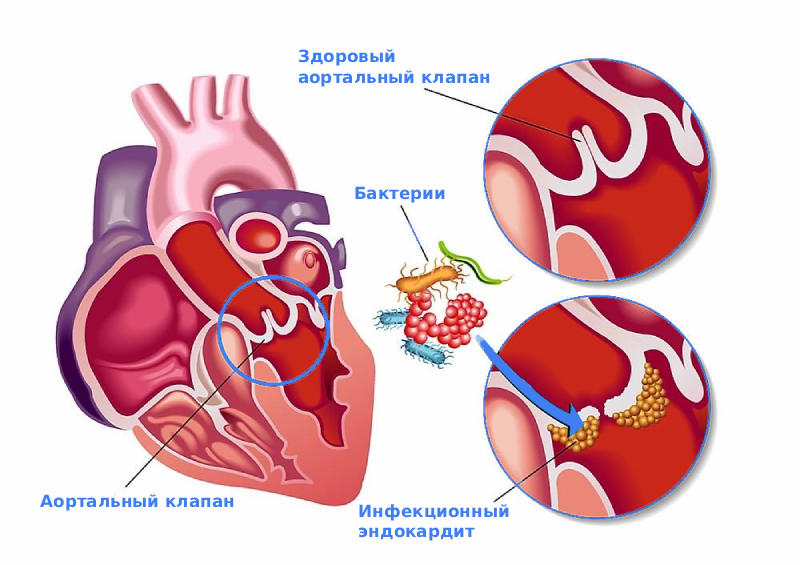
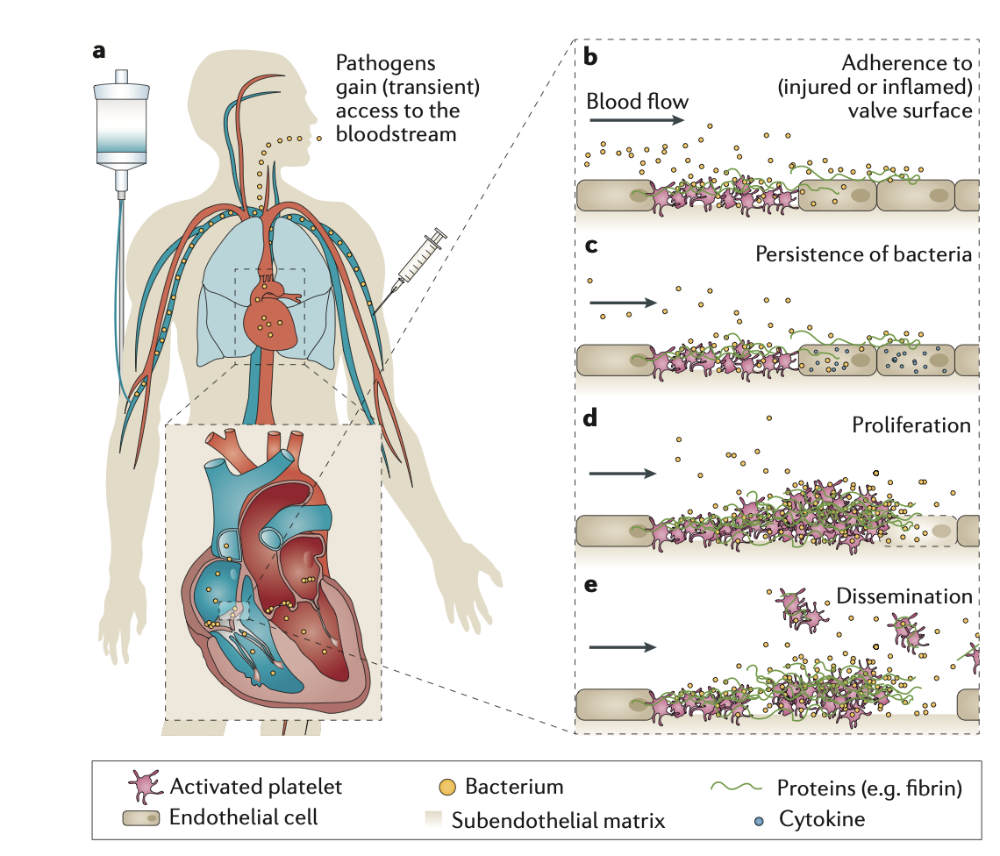
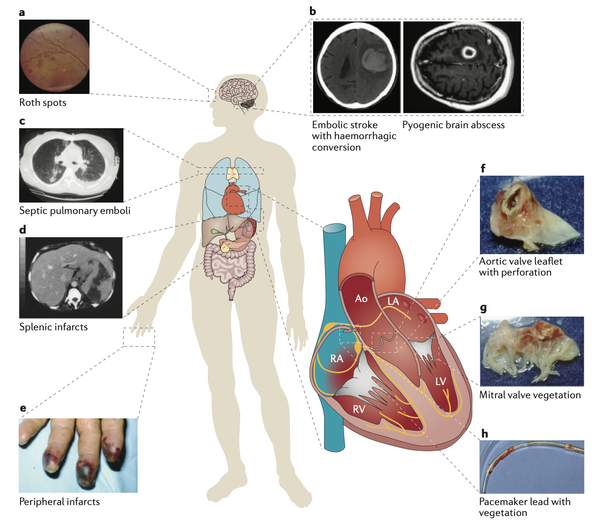
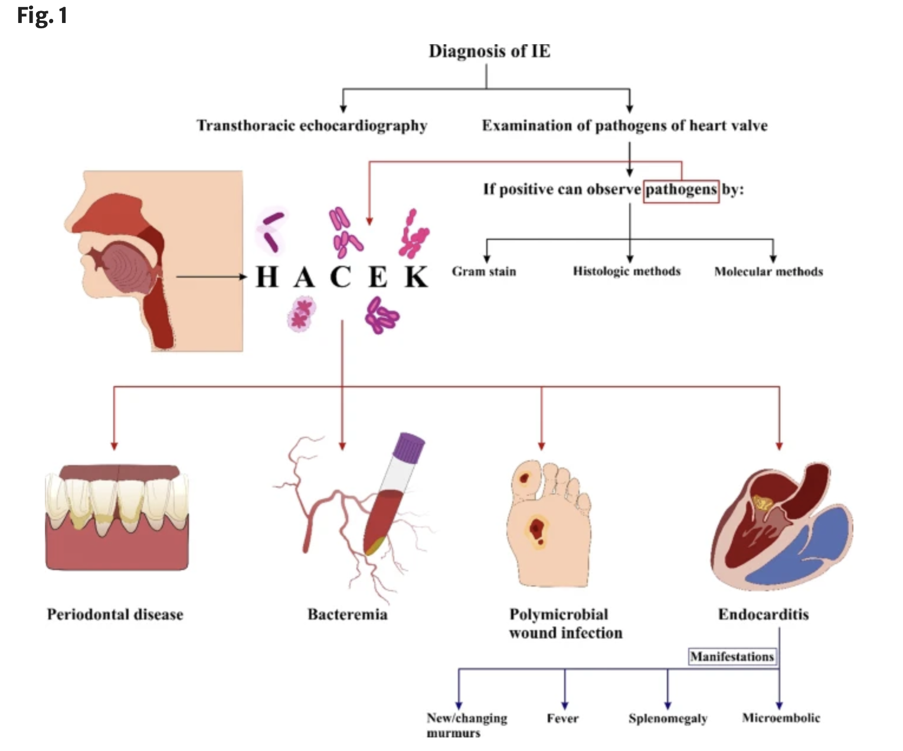
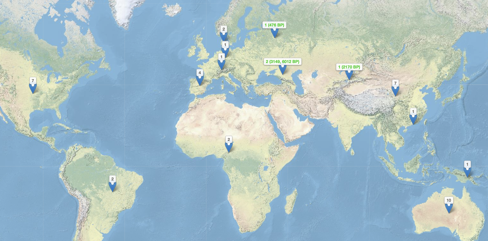
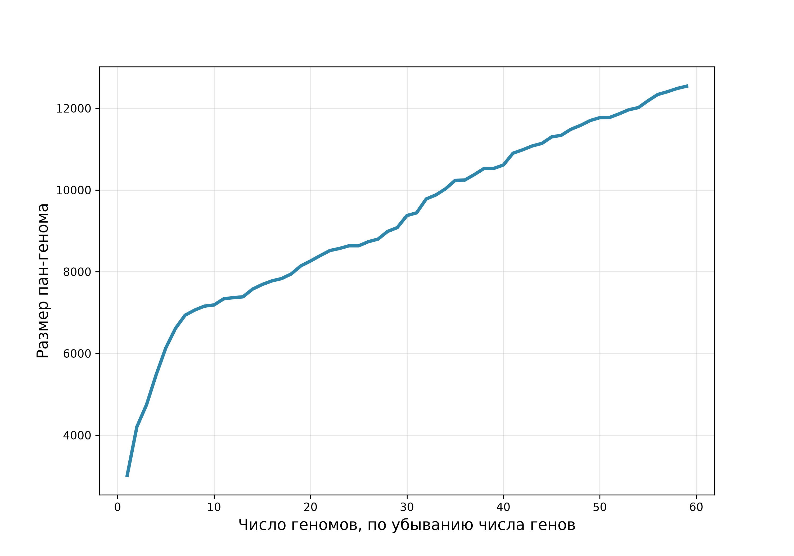
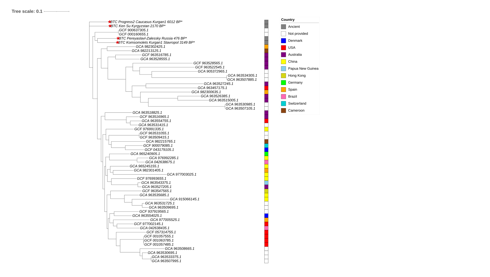
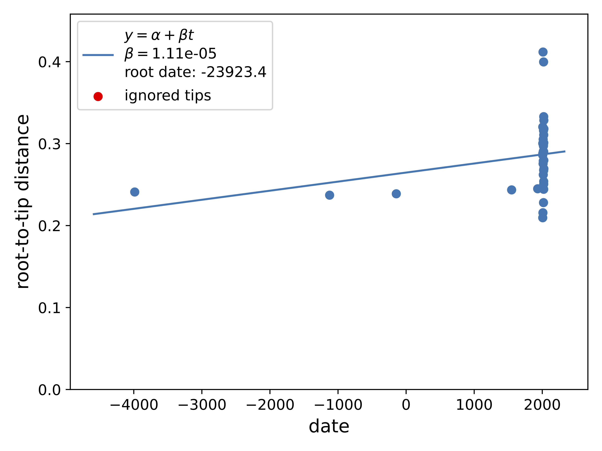
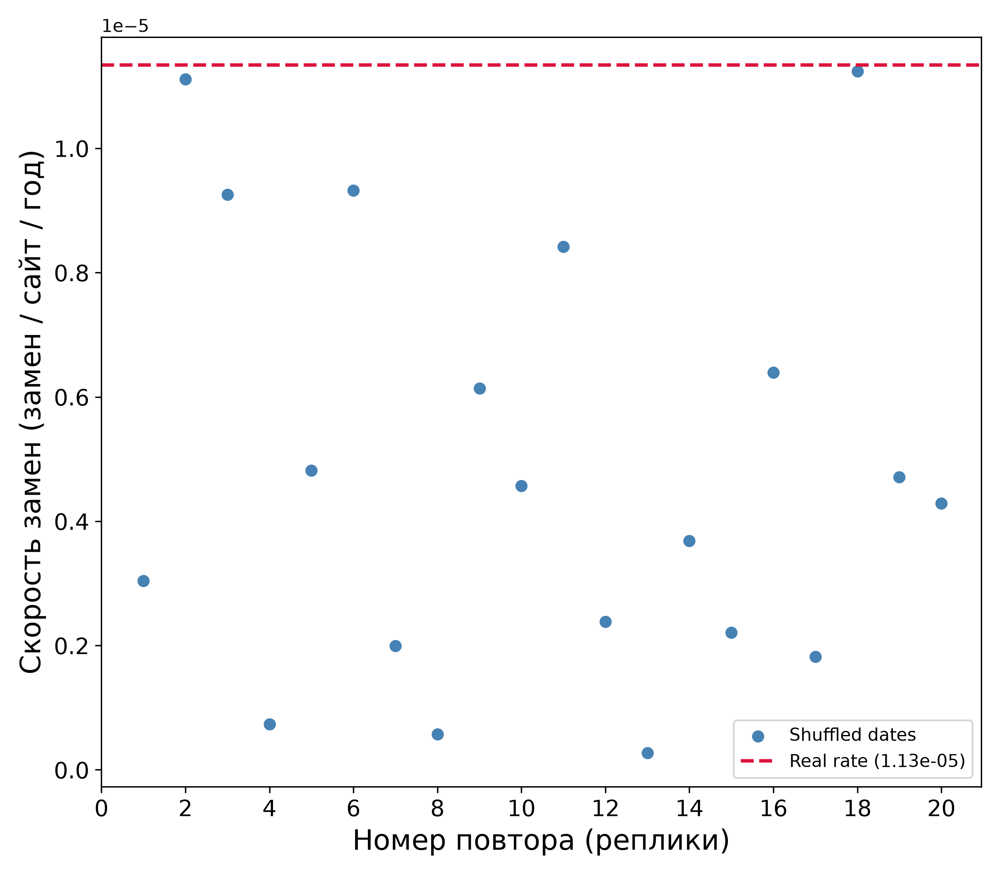
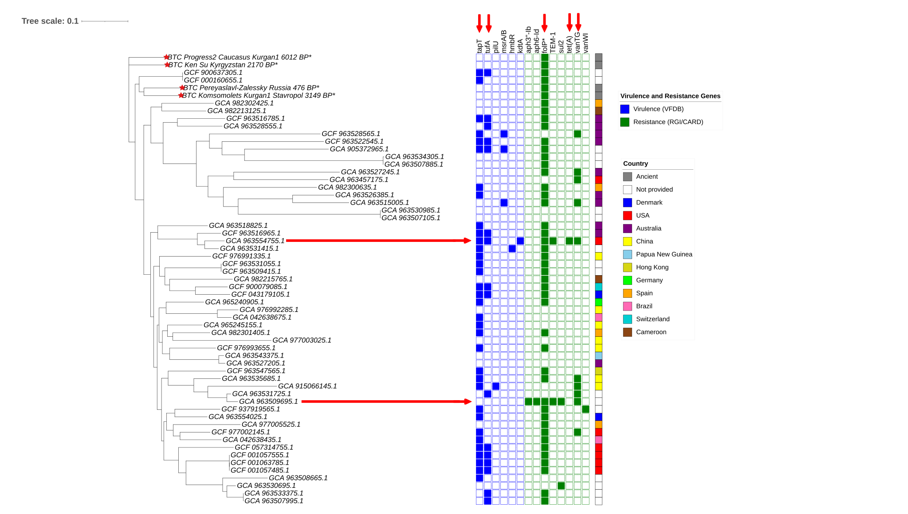

Изучение древних микроорганизмов группы HACEK с точки зрения эволюционной биологии
1 Магистерский диплом 2027
Сравнительный геномный анализ древних и современных штаммов группы HACEK.
Цель работы — сравнительный геномный анализ древних и современных штаммов трёх видов группы HACEK (Cardiobacterium hominis, Eikenella corrodens, Aggregatibacter actinomycetemcomitans) для оценки их филогенетических связей, наличия временного сигнала и набора генов факторов вирулентности и антибиотикорезистентности.
Задачи:
- Построить ML-филогенетическое дерево по коровому выравниванию для C. hominis, E. corrodens и A. actinomycetemcomitans.
- Проверить наличие сигнала времени в выборке и, при его наличии, построить датированное дерево.
- Выявить гены факторов вирулентности (VFDB) и гены антибиотикорезистентности (CARD/RGI) у исследованных штаммов.
- (Опционально) Провести анализ де-ново сборок, включая изучение рекомбинации и признаков положительного отбора.
В настоящей главе представлены результаты по C. hominis. Анализ E. corrodens и A. actinomycetemcomitans запланирован как продолжение работы.
1.1 Введение

Инфекционный эндокардит (ИЭ) — это воспаление внутренней оболочки сердца (эндокарда), чаще всего поражающее сердечные клапаны. ИЭ остается тяжелым жизнеугрожающим заболеванием с высокой летальностью, несмотря на значительный прогресс в диагностике и антибактериальной терапии (Tharsiga et al. 2026). Ситуация усугубляется изменением демографического профиля пациентов: за последние десятилетия пик заболеваемости сместился с 45 лет в 1950-х годах до 70 лет в настоящее время - риск развития ИЭ у пожилых людей в пять раз выше, чем в общей взрослой популяции (Ursi et al. 2018).
Среди редких возбудителей ИЭ особое место занимают грамотрицательные бактерии группы HACEK (Haemophilus, Aggregatibacter actinomycetemcomitans, Cardiobacterium hominis, Eikenella corrodens и Kingella kingae), входящие в состав нормальной микрофлоры полости рта и верхних дыхательных путей человека (Khaledi et al. 2022; Chambers et al. 2013). Cardiobacterium hominis известен как возбудитель эндокардита с 1962 года (Le Quellec et al. 1994a). Согласно классическим представлениям Ellner et al., этот микроорганизм обладает «крайне низкой вирулентностью» (ELLNER et al. 1979). Однако в клинической практике эта особенность существенно затрудняет диагностику: низкая вирулентность не делает инфекцию безопасной, а лишь маскирует ее развитие, позволяя патогену длительно и незаметно разрушать ткани сердца при наличии фоновой патологии. Как показал обзор 44 клинических случаев, ключевыми факторами риска выступают перенесенное протезирование клапанов (57%), стоматологические вмешательства или кариес (20%), а также врожденные аномалии клапанного аппарата (5%) (Ono et al. 2023).
Исторически эндокардит, вызванный C. hominis, ассоциировался с высокой летальностью, достигавшей в доантибиотическую и раннюю хирургическую эпоху 26% (ELLNER et al. 1979). Внедрение современных протоколов лечения позволило повысить частоту выздоровления до 93% при поражении естественных клапанов и до 94% — при протезном эндокардите (Malani et al. 2006).
1.2 Патогенез ИЭ и клинические особенности течения

Развитие инфекционного эндокардита начинается с кратковременного попадания бактерий в кровь при стоматологических вмешательствах, наличии хронических очагов инфекции в полости рта или использовании внутривенных катетеров. Переносясь с кровотоком, микроорганизмы прикрепляются к поврежденным участкам внутренней выстилки сердца — на естественных или искусственных клапанах, а также на внутрисердечных устройствах. На примере Staphylococcus aureus показано, что возбудители способны активно проникать в клетки внутренней оболочки и вызывать их быстрое разрушение. По мере размножения колонии микробов погружаются в защитную основу из фибрина и тромбоцитов, образуя крупные инфицированные разрастания — так называемые вегетации (Holland et al. 2016).

Длительный рост вегетаций приводит к местному разрушению тканей вплоть до перфорации створок клапана (f–h). На поздних этапах частицы вегетаций могут крошиться, отрываться и переноситься током крови, вызывая закупорку питающих артерий жизненно важных органов с развитием инфарктов, инсультов и гнойных очагов. При правостороннем поражении сердца в первую очередь страдают легкие (c). При левостороннем процессе развиваются ишемические и геморрагические поражения головного мозга с образованием гнойников (b), инфаркты почек и селезенки (d), а также омертвение тканей конечностей (e). Дополнительно циркулирующие в крови иммунные комплексы вызывают распространенное воспаление мелких сосудов, которое проявляется, в частности, кровоизлияниями на глазном дне — пятнами Рота (a) (Holland et al. 2016).

Прямым следствием низкой вирулентности C. hominis является подострое, стертое и малосимптомное течение болезни. Из-за отсутствия яркой острой клиники период от появления первых признаков до постановки диагноза затягивается в среднем до 138 ± 128 дней (Malani et al. 2006). В клинической картине преобладают неспецифические симптомы: лихорадка (74%), общая слабость и недомогание (53%), снижение массы тела и анорексия (40%), ночная потливость (24%), а также артралгии и миалгии (21%) (Malani et al. 2006). В связи с этим диагностика требует комплексного подхода и опирается на сочетание эхокардиографии, оценки клинических признаков (лихорадка, появление новых сердечных шумов) и выделения возбудителя заболеваний пародонта или бактериемии (Khaledi et al. 2022).
Так, например, в недавнем клиническом наблюдении описан случай инфекционного эндокардита (ИЭ), вызванного C. hominis, у 37-летней женщины с двустворчатым аортальным клапаном и его протезом в анамнезе. Заболевание протекало подостро: в течение 3 месяцев пациентку беспокоила лишь нарастающая одышка. Длительное малосимптомное течение привело к развитию тяжелого осложнения — абсцесса корня аорты. В результате пациентке потребовалось повторное хирургическое вмешательство (замена протеза клапана и реконструкция корня аорты), после которого наступило выздоровление (Shah 2024).
Другой пример поздней диагностики и ее последствий представлен в (Sundin et al. 2025), где описан случай протезного эндокардита митрального клапана у 67-летнего мужчины с биопротезом в анамнезе. Инфицирование C. hominis произошло после стоматологических процедур, проведенных без антибиотикопрофилактики. На протяжении 6 месяцев у пациента отмечались неспецифические и постепенно нарастающие симптомы: слабость, утомляемость, озноб, отеки нижних конечностей и периодическая лихорадка до 39,4 °C. Поводом для госпитализации послужили лишь положительные результаты амбулаторных посевов крови. Из-за трудностей культивирования C. hominis на стандартных питательных средах верификация диагноза затянулась, что привело к серьезным осложнениям: септическим эмболиям с развитием инфарктов селезенки и выраженной анемии (снижение гемоглобина с 13,6 до 9,1 г/дл). Пациенту была проведена повторная замена митрального клапана в сочетании с 6-недельным курсом внутривенной терапии цефтриаксоном; на контрольном осмотре через 6 недель зафиксировано полное разрешение симптомов.
1.3 Эволюция подходов к антибактериальной терапии и профили резистентности
При выборе тактики лечения клиницисты руководствуются актуальными национальными и международными стандартами (Kotova and Kobalava 2024):
- Российские клинические рекомендации: «Инфекционный эндокардит и инфекция внутрисердечных устройств» (2021 г.);
- Европейские рекомендации: «ESC Guidelines for the management of endocarditis» (2023 г.).
Исторически «золотым стандартом» терапии эндокардита группы HACEK считалась комбинация ампициллина и гентамицина (Calza et al. 2004). Однако распространение штаммов C. hominis, продуцирующих β-лактамазы (в частности, типа TEM), потребовало пересмотра этих схем (Le Quellec et al. 1994b; Lu et al. 2000). С середины 2000-х годов препаратами выбора стали цефалоспорины III поколения (преимущественно цефтриаксон) длительностью 4 недели при поражении естественного клапана и 6 недель — при протезном эндокардите (Walkty 2005). Эффективность такого подхода подтверждается и современными наблюдениями: так, в описанном в 2026 году случае эндокардита у 40-летнего пациента без сопутствующей патологии шестинедельный курс цефалоспорина III поколения привел к полному выздоровлению (Tharsiga et al. 2026).
C. hominis входит в состав орального микробиома, для которого характерен активнвый горизонтальный переносом генов. В связи с этим практический и научный интерес представляет мониторинг его резистентности к препаратам, не относящимся к первой линии терапии инфекционного эндокардита (ИЭ):
- Гликопептиды (ванкомицин): часто используются для эмпирической стартовой терапии ИЭ до выделения возбудителя. Как и другие грамотрицательные микроорганизмы, C. hominis обладает природной устойчивостью к ванкомицину из-за непроницаемости внешней мембраны для его крупных молекул.
- Тетрациклины и сульфаниламиды: не используются при эндокардитах, вызванных бактериями группы HACEK. Тем не менее vониторинг таких генов позволяет оценить эволюционный потенциал патогена и интенсивность межвидового генетического обмена.
1.4 Эволюционная история орального микробиома
Реконструкция эволюционной истории микроорганизмов, ассоциированных с человеком, стала возможной благодаря развитию палеомикробиологии — направления, изучающего древнюю бактериальную ДНК (aDNA). Пионерские работы середины 1980-х годов доказали принципиальную возможность секвенирования древнего генетического материала, что открыло новые пути для изучения прошлого человека и его симбионтов. Как отмечается в обзорной работе Arning и Wilson (2020), одним из наиболее информативных источников древней бактериальной ДНК является зубной камень (dental calculus), позволяющий реконструировать состав древнего орального микробиома и выявлять возбудителей заболеваний полости рта (Arning and Wilson 2020).
Зубной камень представляет собой минерализованную зубную бляшку — кальцинированную бактериальную биоплёнку, которая формируется послойно под воздействием слюны и десневой жидкости. Благодаря такой слоистой структуре он сохраняет последовательную «летопись» микробиома ротовой полости на протяжении жизни индивида, отражая особенности его диеты, перенесённые инфекции и воздействие внешней среды. С методической точки зрения зубной камень обладает высокой ценностью для палеогенетики: из него удаётся извлечь примерно в 1000 раз больше древней ДНК, чем из костной ткани того же индивида (согласно данным (Warinner et al. 2014)). Доминирование бактериальной фракции в образцах делает этот субстрат оптимальным ресурсом для сборки палеогеномов (Arning and Wilson 2020).
Работа с древней ДНК сопряжена с риском посмертной микробной колонизации и современной контаминации, поэтому критически важным этапом анализа является аутентификация последовательностей. Подлинность древнего материала подтверждают по характерным сигнатурам постмортального повреждения (PMD):
- Депуринизация и фрагментация: разрывы цепей ДНК приводят к преобладанию коротких фрагментов (менее 100 п.н.) с повышенной частотой пуриновых оснований перед точками разрыва.
- Дезаминирование цитозина: химическая модификация приводит к заменам цитозина на урацил (C→U), которые при секвенировании считываются как тимин (T) и накапливаются преимущественно на 5’-концах фрагментов.
Несмотря на то что разновозрастная посмертная колонизация может отчасти размывать профиль повреждений, современные биоинформатические подходы позволяют надёжно выделять эндогенную ДНК. К настоящему времени из зубного камня неандертальцев выделены древнейшие бактериальные палеогеномы возрастом около 48–50 тысяч лет, что демонстрирует исключительный потенциал этого источника для изучения глубокой эволюции микробиоты (Arning and Wilson 2020).
Помимо реконструкции таксономического состава древних микробных сообществ, анализ зубного камня позволяет отслеживать эволюцию отдельных патогенов и условных патогенов. Сравнение древних и современных геномов даёт возможность установить время формирования современных клональных линий, проследить динамику приобретения или утраты факторов вирулентности, а также выяснить, существовали ли гены антимикробной резистентности в природных популяциях задолго до начала массового применения антибиотиков.
1.5 Обоснование и цель исследования
Применение палеогеномного подхода особенно актуально для малоизученных бактерий группы HACEK. Из-за редкой выявляемости этих возбудителей в клинической практике их геномная организация, пути эволюции и факторы вирулентности остаются слабо охарактеризованными. Включение в анализ древних образцов позволяет восполнить эти пробелы и отследить историю формирования данных видов.
В связи с этим целью исследования стал сравнительный геномный анализ современных и древних штаммов бактерий группы HACEK. Это позволило охарактеризовать пан-геномы исследуемых видов, реконструировать их филогеографию и эволюционную динамику, а также проследить изменения факторов патогенности и генов антимикробной резистентности от древних популяций до современных клинических изолятов.
1.6 Данные
В NCBI на момент выгрузки было доступно 55 современных сборок C. hominis; страна сбора указана для 38 из них (11 стран), для 17 — отсутствует.
| Страна | Сборок |
|---|---|
| Страна не указана | 17 |
| Австралия | 10 |
| Китай | 7 |
| США | 7 |
| Испания | 4 |
| Бразилия | 2 |
| Камерун | 2 |
| Дания | 2 |
| Германия | 1 |
| Гонконг | 1 |
| Папуа — Новая Гвинея | 1 |
| Швейцария | 1 |
Древние образцы охватывают широкий хронологический диапазон: от 476 л.н. (Переславль-Залесский) до 6012 ± 28 л.н. (Прогресс 2, Кавказ), с промежуточными точками 2170 ± 23 л.н. (Кен-Су, Киргизия) и 3149 л.н. (курган Комсомолец 1, Ставропольский край). Разброс между древнейшим и современным образцом составляет около 6000 лет.
| Образец | Возраст | Место |
|---|---|---|
| 4510 | 476 л.н. (1500–1600 н.э.) | Переславль-Залесский, Россия |
| 7130 | 3149 л.н. (1240–1007 до н.э.) | Курган Комсомолец 1, Ставропольский край |
| 3140 | 6012 ± 28 л.н. | Прогресс 2, курган 1, Кавказ |
| 1780 | 2170 ± 23 л.н. | Кен-Су, Киргизия |
Карта расположения образцов приведена в разделе «Результаты» (подраздел «Состав и качество выборки»).
1.7 Методы
Анализ выполнен по схеме из семи последовательных этапов: (1) сбор публичных геномов и метаданных, (2) построение консенсусных последовательностей для древних образцов, (3) аннотация всех геномов в едином формате, (4) пан-геномный анализ и построение корового выравнивания, (5) отбор сайтов и филогенетическая реконструкция методом максимального правдоподобия, (6) проверка временного сигнала, (7) поиск генов вирулентности и антибиотикорезистентности. Каждый этап реализован отдельным скриптом и описан в соответствующей технической главе.
1.7.1 Сбор публичных геномов и метаданных
Современные геномы C. hominis получены из NCBI. Метаданные (assembly accession, номер биообразца, страна, дата сбора, характеристики сборки) выгружались скриптом scripts/download_taxon_assemblies_metadata.sh, который обращается к NCBI Datasets API. На момент выгрузки для вида было доступно 55 сборок из 11 стран; для 17 сборок страна в метаданных не указана.
Поле «страна» нормализовали: если в нём перечислено несколько значений через двоеточие, оставляли первое; пустые и неопределённые значения (not provided, not determined, missing) сводили в категорию Not provided.
Полные таблицы метаданных и списки accession приведены в главе про метаданные.
1.7.2 Построение консенсусных последовательностей древних образцов
Для четырёх древних образцов были предоставлены готовые BAM-файлы, картированные на референсный геном C. hominis NCTC10426 (GCF_900637305.1, длина 2 670 755 п.н.). Картирование выполнено на предшествующем этапе проекта и в рамки настоящей работы не входит.
Консенсус строили программой ANGSD (сборка zjnolen/angsd, режим -doFasta 1 -doCounts 1) со следующими фильтрами: минимальное качество картирования -minMapQ 20, минимальное качество основания -minQ 20. Порог минимальной глубины (-minDepth) не задавался. В позиции, где после фильтрации оставался хотя бы один подходящий рид, ANGSD записывает основание из числа прошедших фильтр; там, где подходящих ридов нет, в консенсус ставится N. Буква референса в консенсус не подставляется, что принципиально: иначе участки без покрытия маскировались бы под референсное состояние и завышали бы сходство древних образцов с референсом.
В результате все четыре консенсуса имеют длину референса (2 670 755 п.н.), а доля неопределённых оснований N в них составляет от 10,8% до 18,1%. Иными словами, 82–89% генома C. hominis удалось восстановить для каждого древнего образца. Оставшиеся N — это участки, где древняя ДНК не сохранилась или не прошла порог качества; в коровом выравнивании они превращаются в пропуски.
Подробности и полный код приведены в главе про консенсусы.
1.7.3 Аннотация геномов
Все 59 геномов (55 современных сборок и 4 древних консенсуса) аннотированы в едином формате программой Prokka в контейнере staphb/prokka с параметрами --kingdom Bacteria --cpus 10 --force.
Готовые аннотации NCBI (формат _genomic.gff) для пан-геномного анализа не использовались: Roary ожидает GFF с единообразной структурой записей и с локальными идентификаторами генов, а файлы NCBI содержат другую разметку атрибутов.
Итоговый набор GFF, использованный в пан-геномном анализе, включает 59 файлов. См. главу про аннотацию.
1.7.4 Пан-геномный анализ
Пан-геном строили программой Roary (контейнер sangerpathogens/roary) с параметрами -i 80 -cd 80:
-i 80— минимальная процентная идентичность при кластеризации белок-белок (BLASTP). Гомологи с идентичностью ниже 80% попадают в разные кластеры.-cd 80— доля геномов, при которой ген считается коровым.
Roary распределяет все кластеры по четырём категориям в зависимости от доли геномов, в которых ген присутствует, а также строит коровое выравнивание — конкатенацию последовательностей коровых генов, упорядоченных по кластерам.
См. главу про пан-геном.
1.7.5 Отбор сайтов для филогенетического анализа
Фильтрацию выполняли ClipKIT в режиме kpi-smart-gap.
Этот режим оставляет парсимониально информативные сайты (то есть сайты, где минорный вариант встречается минимум дважды — только такие сайты поддерживают какую-либо топологию) и одновременно вырезает блоки с аномально высокой долей пропусков по собственному адаптивному порогу.
1.7.6 Филогенетическая реконструкция методом максимального правдоподобия
ML-дерево построено в IQ-TREE 3.1.3, модель GTR+F+ASC+G4:
GTR— общая реверсивная модель с шестью свободными параметрами замен и неравными частотами оснований;+F— эмпирические частоты оснований, оценённые по выравниванию;+G4— гамма-распределение скоростей замен по сайтам с четырьмя категориями, что учитывает различия в эволюционной скорости между позициями кодона;+ASC— поправка на асцертимент (ascertainment bias correction). Она необходима потому, что в выравнивании нет константных сайтов: они были удалены на этапе фильтрации.
Достоверность ветвления оценивали двумя независимыми методами: 1000 ультрабыстрых бутстрепов (UFBoot) и 1000 псевдореплик SH-aLRT.
См. главу про ML-дерево.
1.7.7 Анализ пространственной структуры
Для оценки связи филогении с географией ML-дерево проецировали на карту функцией phylo.to.map из пакета phytools (R). На карту наносили только листья с известными координатами: из 59 листьев осталось 42, поскольку для 17 сборок координаты отсутствуют.
Такая проекция позволяет визуально оценить, распадаются ли соседние ветви дерева на разные регионы. См. главу про ML-дерево.
1.7.8 Проверка временного сигнала: регрессия «корень — лист»
Молекулярное датирование имеет смысл только при наличии временного сигнала, то есть при линейном росте генетического расстояния от корня до листьев в зависимости от возраста образца.
Проверку выполняли в TreeTime (treetime clock) на ML-дереве с автоматическим подбором корня по методу наименьших квадратов (--reroot least-squares).
Даты задавали отдельным файлом name,date.
Для древних образцов календарный год определяли следующим образом: для образцов с калиброванным интервалом (4510: 1500–1600 гг. н.э.; 7130: 1240–1007 гг. до н.э.) брали середину интервала (1550 и −1123,5 соответственно), для образцов с радиоуглеродным возрастом (3140: 6012 ± 28 л.н.; 1780: 2170 ± 23 л.н.) год вычисляли как разность текущего года и возраста в годах назад (−3986 и −144).
Качество подгонки характеризуется коэффициентом детерминации \(R^2\): значение, близкое к нулю, означает, что возраст образца не объясняет расстояние до корня, и датирование по такой выборке некорректно.
Надёжность точечной оценки скорости TreeTime не сообщает доверительного интервала, поэтому одного \(R^2\) недостаточно для вывода — требуется сравнение со случайной моделью. См. главу про сигнал времени.
1.7.9 Проверка временного сигнала: тест рандомизации дат
Чтобы формально проверить значимость регрессии «время — расстояние», применяли тест рандомизации дат (Date Randomization Test, DRT).
В ходе теста даты случайным образом перемешиваются между последовательностями. Это полностью разрушает реальную связь между временем и накопленными заменами. После каждого перемешивания оценка скорости в TreeTime запускается заново. В рамках анализа выполнили 20 случайных перестановок. Временной сигнал считается достоверным только в том случае, если реальная оценка скорости замен не попадает в распределение скоростей, полученных на перемешанных данных.
Скрипт теста — scripts/run_treetime_drt.py. См. главу про сигнал времени.
1.7.10 Поиск генов вирулентности
Гены факторов вирулентности искали программой ABRicate по базе VFDB на всех 59 нуклеотидных последовательностях (55 сборок и 4 консенсуса).
Матрицу присутствия строили по максимальному покрытию: если ген найден у образца хотя бы одним фрагментом, образец помечался как несущий ген (1), иначе 0. Итоговая матрица имеет размер 59 × 6. См. главу про гены.
1.7.11 Поиск генов антибиотикорезистентности
Гены устойчивости искали программой RGI (rgi main --local --input_type contig) по локальной базе CARD на тех же 59 последовательностях. RGI присваивает каждому попаданию категорию достоверности:
- Perfect — совпадение с референсным геном базы на 100% идентичности и полной длины; это фактически точное совпадение с известным детерминантом;
- Strict — попадание в референсный ген с идентичностью ниже 100%, но выше порога, специфичного для данной модели;
- Loose — частичное или слабое совпадение.
В анализ включены только попадания Perfect и Strict. См. главу про гены.
1.8 Результаты
1.8.1 Состав и качество выборки
В анализ вошли 59 геномов: 55 современных сборок C. hominis из NCBI и 4 древних консенсуса.

Качество сборок неоднородно - длина генома варьирует от 1,02 до 2,67 Мб, число контигов — от 1 до 637 (медиана 291). Геномы представлены на трёх уровнях: 2 полных генома, 10 скаффолдов и 43 контига.
1.8.2 Пангеномный анализ
Пан-геномный анализ выявил 12 541 кластер гомологов. Распределение по категориям представлено в таблице:
| Категория | Доля штаммов | Число генов |
|---|---|---|
| Коровые (Core) | 80% ≤ штаммов ≤ 100% | 451 |
| Мягкое ядро (Soft core) | 79% ≤ штаммов < 80% | 85 |
| Оболочка (Shell) | 15% ≤ штаммов < 79% | 2782 |
| Облако (Cloud) | штаммов < 15% | 9223 |
| Всего | 12 541 |
Коровое ядро составляет лишь 3,6% пан-генома (451 из 12 541). Показательно, что ни один ген не присутствует у всех 59 штаммов: максимальная встречаемость — 58 из 59.

Кривая накопления пан-генома не выходит на насыщение. Это означает, что пан-геном C. hominis открытый.
1.8.3 Отбор сайтов для филогенетического анализа
По результатм ClipKIT коровое выравнивание содержит 59 последовательностей длиной 343 520 сайтов. Ни одна колонка не свободна от пропусков: в каждой хотя бы у одного штамма стоит прочерк. Это прямое следствие того, что коровое выравнивание собирается из генов, отсутствующих у части штаммов, а древние консенсусы дополнительно содержат участки без покрытия.
Для построения дерева использовали файл clipkit_core_snps.fa: 39 954 сайта, то есть 88% исходного выравнивания вырезано.
1.8.4 Филогенетическое дерево
ML-дерево построено по 39 954 сайтам корового выравнивания. Дерево содержит 59 листьев и 56 внутренних узлов с оценками поддержки.

Пять пар геномов в дереве имеют близкие к нулю длины ветвей (порядка 10⁻⁶ замен на сайт). Это свидетельствует о практической идентичности их коровых последовательностей.
1.8.5 Соответствие дерева географии
Для визуализации филогеографической структуры политомии в исходном дереве были предварительно разрешены нулевыми ветвями (функция multi2di).

Проекция ML-дерева на карту не выявила выраженной географической кластеризации у современных штаммов.
1.8.6 Отсутствие временного сигнала
Регрессия «корень — лист» дала оценку скорости 1,11 × 10⁻⁵ замен на сайт в год и коэффициент детерминации \(R^2 = 0{,}08\). Линия регрессии почти горизонтальна: возраст образца объясняет лишь 8% разброса расстояний до корня.

Тест рандомизации дат подтвердил отсутствие надёжного временного сигнала. Хотя оценка скорости на реальных датах (1,13 × 10⁻⁵) формально превысила значения для всех 20 случайных перестановок (диапазон от 2,7 × 10⁻⁷ до 1,12 × 10⁻⁵, медиана 4,6 × 10⁻⁶), две перестановки (№2 и №18) дали практически идентичные результаты скорость 1,11 × 10⁻⁵ и 1,12 × 10⁻⁵ при \(R^2 = 0{,}09\) .

Таким образом, оба метода согласованно указывают на непригодность выборки для калибровки молекулярных часов. В связи с этим от молекулярного датирования пришлось отказаться, а дальнейший анализ был сфокусирован на сравнении профилей генов вирулентности и антибиотикорезистентности у древних и современных геномов.
1.8.7 Гены факторов вирулентности
При стандартных порогах ABRicate (80% идентичности, 80% покрытия) в базе VFDB не найдено ни одного гена ни у одного из 59 геномов.
При снижении порога до 70% идентичности и 70% покрытия найдено шесть гомологов:
| Ген | Число образцов | Предполагаемая функция |
|---|---|---|
| tapT | 34 | АТФаза пилей IV типа, адгезия |
| tufA | 16 | Фактор элонгации Tu |
| msrA/B | 3 | Репарация метионина, ответ на стресс |
| hmbR | 1 | Рецептор гемоглобина |
| kdtA/waaA | 1 | Сборка липоолигосахарида |
| pilU | 1 | Подвижность пилей IV типа |
Распределение находок имеет несколько особенностей. Во-первых, оно сильно смещено: tapT найден у 34 образцов (58% выборки), тогда как три гена (hmbR, kdtA/waaA, pilU) — каждый у одного.
Во-вторых, ни один из шести гомологов не обнаружен в четырёх древних консенсусных геномах.
Полученные результаты хорошо согласуются с клиническими данными, согласно которым Cardiobacterium hominis характеризуется крайне низкой вирулентностью.
1.8.8 Гены антибиотикорезистентности
Поиск по CARD с учётом только попаданий Perfect и Strict выявил восемь детерминант, относящихся к пяти классам антибиотиков:
| Ген | Класс | Число образцов | Из них древних |
|---|---|---|---|
| folP с заменами | Сульфаниламиды | 45 | 4 |
| vanT (кластер vanG) | Гликопептиды | 10 | 0 |
| TEM-1 | β-Лактамы | 2 | 0 |
| sul2 | Сульфаниламиды | 2 | 0 |
| APH(3’’)-Ib | Аминогликозиды | 1 | 0 |
| APH(6)-Id | Аминогликозиды | 1 | 0 |
| tet(A) | Тетрациклины | 1 | 0 |
| vanW (кластер vanI) | Гликопептиды | 1 | 0 |
Общая картина резистома мозаична. Среди современных сборок 46 из 55 несут хотя бы одну детерминанту, а девять не несут ни одной. При этом у шести сборок не выявлено ни одного гена ни из базы CARD, ни из VFDB (GCA_963507105.1, GCA_963527205.1, GCA_963530985.1, GCA_963543375.1, GCA_976992285.1 и GCA_977003025.1).
Самой распространённой детерминантой в выборке оказался ген folP с мутациями, обусловливающими устойчивость к сульфаниламидам. Он обнаружен у 45 из 59 образцов (76 %), включая все четыре древних генома, где стал единственным выявленным маркером резистентности. Наличие этой мутации у древнейших образцов (6012 л. н.) — содержательно важный результат: замена в folP, снижающая сродство фермента к сульфаниламидам, присутствовала в популяциях C. hominis задолго до начала массового клинического применения этих препаратов в 1930-х годах.
На общем фоне выделяются два современных генома. Сборка GCA_963509695.1 несёт шесть детерминант, охватывающих четыре класса антибиотиков: аминогликозиды (APH(3’’)-Ib, APH(6)-Id), β-лактамы (TEM-1), сульфаниламиды (sul2 и folP) и гликопептиды (vanT). Сборка GCA_963554755.1 содержит четыре детерминанты: TEM-1, tet(A), vanT и folP. Обнаружение β-лактамазы TEM-1 согласуется с литературными данными о механизмах устойчивости к пенициллинам у представителей группы HACEK.
Интерпретация находок, связанных с гликопептидами, требует важной оговорки. Ген vanT кодирует серин-рацемазу и сам по себе не обеспечивает устойчивость к ванкомицину: для формирования резистентного фенотипа необходим полный кластер (включающий лигазу VanG и дипептидазу VanXY) и согласованная экспрессия всего оперона. Ни у одного из 10 образцов с vanT полный кластер не подтверждён. Кроме того, грамотрицательные бактерии, к которым относится C. hominis, обладают природной устойчивостью к ванкомицину за счёт непроницаемости внешней мембраны, поэтому клиническое значение выявления vanT у этого вида остаётся неопределённым.
В целом обнаруженные детерминанты не влияют на выбор клинической тактики: ванкомицин и тетрациклины не входят в стандартные схемы терапии эндокардита, вызванного бактериями группы HACEK, а сульфаниламиды при данной инфекции не применяются.

1.8.9 Сводка результатов
Проведённый анализ даёт следующие основные результаты.
Пангеном. Пангеном C. hominis состоит из 12 541 кластера гомологов, из которых мягкое коровое ядро (присутствуют у >95% штаммов) составляет только 451 ген (3,6%). Ни один ген не обнаружен у всех 59 штаммов одновременно. Кривая накопления не выходит на плато, то есть пангеном является открытым и его размер определяется объёмом выборки.
ML-дерево. Филогенетическая реконструкция не подтверждает пространственную структуру выборки. Для C. hominis отсутствие географической кластеризации не является неожиданным. Вид входит в нормальную микробиоту полости рта и кишечника человека, а его распространение связано с миграциями человеческих популяций, а не с географическими барьерами.
Временной сигнал. Оба теста — регрессия «корень — лист» (\((R^2 = 0,08)\)) и тест рандомизации дат — указывают на отсутствие в выборке сигнала, пригодного для калибровки молекулярных часов. В связи с этим молекулярное датирование не проводилось.
Вирулентность. При стандартных порогах фильтрации факторы вирулентности не обнаружены ни у одного генома. При снижении порога до 70% найдено шесть гомологов, и все они принадлежат современным сборкам. Выявленные гены относятся к адгезии, формированию оболочки и стрессовому ответу, ни один из них не кодирует токсины. Этот результат согласуется с классическими клиническими наблюдениями.
Резистентность. Картина резистентности мозаична: 46 из 55 современных сборок несут хотя бы один детерминант, шесть не несут ни одного. Единственный детерминант, общий для всех древних образцов, — folP с заменами (устойчивость к сульфаниламидам), и он же самый распространённый в выборке (45 из 59), что указывает на его присутствие в популяциях вида задолго до начала применения сульфаниламидов. Клинически наиболее значимы два генома: GCA_963509695.1 (шесть детерминант, четыре класса) и GCA_963554755.1 (четыре детерминанта, включая tet(A)); оба несут β-лактамазу TEM-1, что важно с учётом роли цефалоспоринов III поколения в терапии.